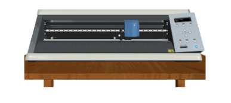

Experiment No.5
Name of Experiment : Digital Fabrication of flexible circuit board.
Objective:
1. To acquire knowledge of flexible circuits.
2. To learn how to fabricate flexible circuits.

Introduction
Prerequisites:
Basic knowledge of Electronics
Digital fabrication involves translation of a digital design into a physical object. The digital design is used to create a physical object from materials such as wood, foam, clay, wax, or metal. Tools such as the Silhouette die cutting machine can be used to shape cardstock or vinyl to create three-dimensional objects by bending or folding the object along perforated lines. Other tools such as 3D printers can be used to construct objects by printing successive layers of materials to form an object
Characteristics of digital fabrication
Digital fabrication is flexible:
This allows for one machine to fulfill many roles and reduces space and resources. Industrial mass-production required a different factory for every type of product, but flexible, digital manufacturing allows the same set of tools to be use to make any electromechanical device you care to name. Flexibility makes it worthwhile to invest in your own fabrication tools; only industrialists would invest in a tool that makes the same thing over and over again, but a tool that can respond to one's needs is a tool worth having in your home.
Digital fabrication is decentralized:
It is no longer necessary to have large factories where technology is made before being distributed around the world. Instead, technologies can be made locally. Essentially, the products travel most of their journey at light-speed as digitally stored data. Design is global; instantiation is local.
Digital fabrication is cheap:
Once a person has fabrication machines, they can create a car, a mobile phone, agricultural equipment or whatever at the cost of raw materials. The standard industrial supply-chain greatly inflates the price of manufactured goods. If you buy a commercially-manufactured computer, your dollar has to cover the costs of mining the material, shipping the material to China, running the machines, labour, marketing, more shipping, and mark-ups by several retailers. Digital fabrication, by empowering people to manufacture their own wealth in their backyard, cuts out all those extra costs and reduces the cost to just energy plus information plus raw materials. Energy comes free from the sun and information comes free from the Internet, so the only cost is raw materials.
Digital fabrication empowers the poor:
Housing, medical equipment, agricultural equipment, electronics - let's assume that it would be a good thing to provide poor people with these things. How are we to do it? You could say there are two ways: One is to manufacture the goods in wealthier places and ship them over and the other is to manufacture them on-site where they are needed. Of these two solutions, only the second one creates local economic stimulus, teaches technological skills and makes communities economically self-sufficient.
Digital fabrication is customizable:
The Web is revolutionizing media and information services because of the ease with which users can generate their own content. The old media (TV, newspapers, radio etc.) were generally one-way channels that made it easy to be a consumer of information and difficult to become a producer. But with blogs, out-of-the-box websites, wikis and so forth, anyone can now broadcast information. Digital manufacturing represents the same revolution of user-generated content being brought to physical goods like electronics. With digital manufacturing, everyone can generate their own phone, their own computer, their own mp3 player or alarm clock. They can express their creativity in their products, rather than having to buy mass-produced ones.

Digital Fabrication of Flexible Circuits
NOTE : TO RUN THIS SIMULATOR FLASH PLAYER 11.3.300.257(64 bit) IS REQUIRED
OR
FLASH PLAYER 11.3.300.257(32 bit) IS REQUIRED| Click on the picture below to start the simulation |
|  |

Procedure
The flexible circuits are we fabricated using copper foil material on vinyl cutter,The step by step Procedure is as Follows
Step-1
Get Circuit in .png format generated in Exp no.3 board using Eagle Software. Instruction of Exp.3 & save into .bmp(Bitmap format)
Click on Start --> Roland CutStudio / CutStudio
Step-2
After Selecting the cutStudio From start Menu Following window will appear as shown in fig 1.
Fig-1
Step-3
In this Figure Left-Bottom corner of the page is Program zero Point. We can start From this Point.
This will be better as starting point of Drawing /importing images into CutStudio as shown in fig 2.
Fig-2
Left Bottom corner should be always Origin of the program….
We are planning to fabricate Same PCB Board Cut out from the Vinyl Cutter Using CutStudio.
Import the .bmp file into Cutstudio given in figure below as shown in Fig 3.
Step-4
Fig-3
Step-5 One schematicof HELLO 1 is given drawn given
Step-6
Step-7
Step-8
Click on Extract counter lines Button
Step-9
Step-10
Step-11
Go --> To File --> Print / Ctrl + P /Cutting Tab on screen as given in fig 12
Click on ok.
Fig 14 Show Flexible Circuit
This is the Assembled flexible Circuit
Fig-4
After Importing the BITMAP file into the CutStudio it will Appear as shown in fig 5 below.
Fig-5
Right click on image --> & Click on Image outline in Fig 6
Fig-6
Following window will appear
Fig-7
Then Click to OK button
Fig-8
At last Extracted Counter line image will look like fig 9
Fig-9
Move Upside Counter line by dragging mouse as given in fig 10.
Fig-10
Fig-11
Fig-12
Following fig 13 shows how flexible circuits cuts on vinyl cutter
Fig-13
Fig-14
(1).jpg)
Fig-15